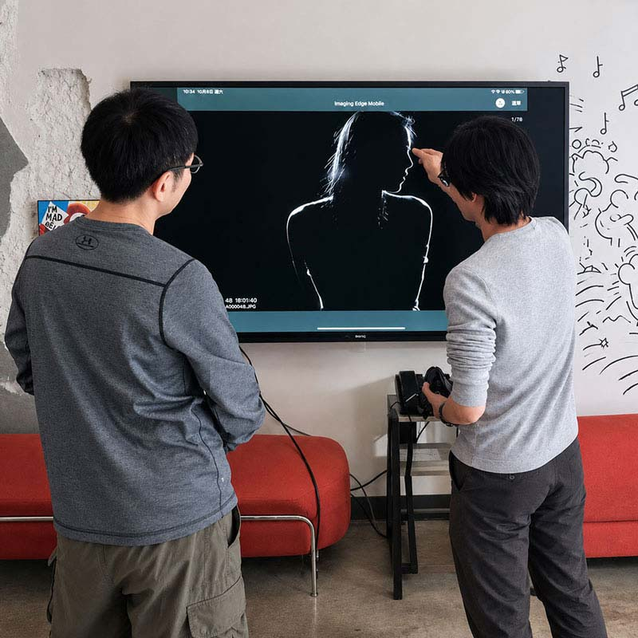

完整創作工作流程
從想法到成品，觀看攝影師如何一步一步建立影像。
突破困境
很多攝影學習停留在單一技術：學過曝光、學過打光、學過構圖，但真正開始創作時，仍然不知道：我要幹什麼？為什麼這樣做？下一步該怎麼決定？因為從技術到作品之間，還缺少一個完整的創作流程。這堂課不是教你使用更多技巧，而是讓你看見一位攝影師如何從想法開始，一路創造影像，直到完成作品。

學習方式
這不是技術教學，也不是單純觀看。課程中，我會公開示範一次完整的人像創作流程：從拍攝主題設定、參考影像整理、Model溝通、服裝造型規劃、燈光設計、拍攝引導，到最後影像如何選擇。拍攝過程中，我會同步說明：現在正在做什麼，為什麼這樣選擇，這個決定會帶來什麼結果，讓你看見攝影現場中，每一個動作背後的判斷標準。
課程收穫
從想法到成品，觀看攝影師如何一步一步建立影像。
不只是知道「怎麼做」，而是理解：什麼情況下，應該選擇什麼方向。
對沒有實拍經驗的可以快速體驗並驗證剛學到的技巧。對於有經驗的拍攝者可以學習整合技術並嘗試創作。
如果你是剛開始學習攝影，可以先看見人像創作的結果，再決定下一步如何學習。如果你已經技術純熟，可以學習如何將技術、視覺與創作整合。
約2小時老師完整拍攝示範，你可以：
約1小時學員親自操作拍攝，你可以：
開課日：
YYYY/MM/DD
剩餘名額: Y人
報名截止日：
YYYY/MM/DD
3～6人小班制
3人以上開課
費用包含：
場地燈具使用
Model費
自備任何品牌相機
自備任何品牌鏡頭
或自備可拍照的手機
可以。
這堂課適合想進入攝影創作的人。不需要先學會完整技術，但如果具備基本相機操作與曝光概念，會更容易理解現場示範內容。
不可以。
課程開放：平面側拍，短影音紀錄，但不可全程錄影。
可以。
建議安裝具有手動曝光功能的攝影App，方便在最後實際拍攝練習。
人像創作體驗課：
觀看攝影師如何完成一次完整創作，了解創作流程與整合方式。
棚內肖像打光工作坊：
深入學習光線系統，建立控制與重現光線的方法。
適合。
如果你已經掌握基本技術，但缺少將技術整合成作品的經驗，這堂課可以讓你觀察攝影師如何在現場做完整判斷。
點擊立即報名按鈕後填寫報名表。確認開課日期與名額後，會收到付款資訊。款項經確認入帳後即保留名額，名單與順位以確認收款的時間為準。
目前提供銀行轉帳方式。
報名截止日（開課日前第 11 日 23:59）以前取消，可全額退費，或改報下一梯次，不須重新付款。
報名截止後至開課前取消：不退費。開課前也可以把名額轉讓給他人（限一次）。
開課後不退費。
若未達開課最低人數而無法開課，可全額退費，或免費改報下一梯次。
因小班制與Model、場地安排，課程無法補課。前一日以前以電子郵件或班級群組請假者，可獲得該堂課的全程錄影，於課後 30 日內供本人觀看，不得轉傳或公開。未事前請假而缺席者，不提供錄影。
依課程內容安排。可能於：老師工作室，租用攝影棚，合作場地或外景。開課前提供詳細地址。